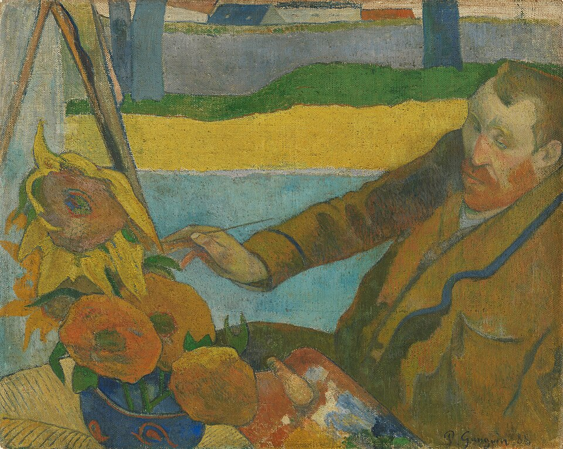

Description
Van Gogh peignant des tournesols est un portrait de Vincent van Gogh réalisé par Paul Gauguin en 1888. Le tableau est exposé au musée Van-Gogh à Amsterdam.
Le 23 octobre 1888, Gauguin rejoint Van Gogh dans le Midi de la France. Il s'installe à Arles dans la maison jaune où Van Gogh lui a préparé une chambre décorée avec des toiles de la série des tournesols. Gauguin y réalise le portrait de Van Gogh avant de quitter Arles le 25 décembre 1888.
Dans une lettre envoyée à son frère Théo en 1889, Van Gogh écrit au sujet de Gauguin : « As-tu vu ce portrait qu'il avait fait de moi peignant des tournesols ? Ma figure s'est après tout bien éclairée depuis mais c'était bien moi, extrêmement fatigué et chargé d'électricité comme j'étais alors ».